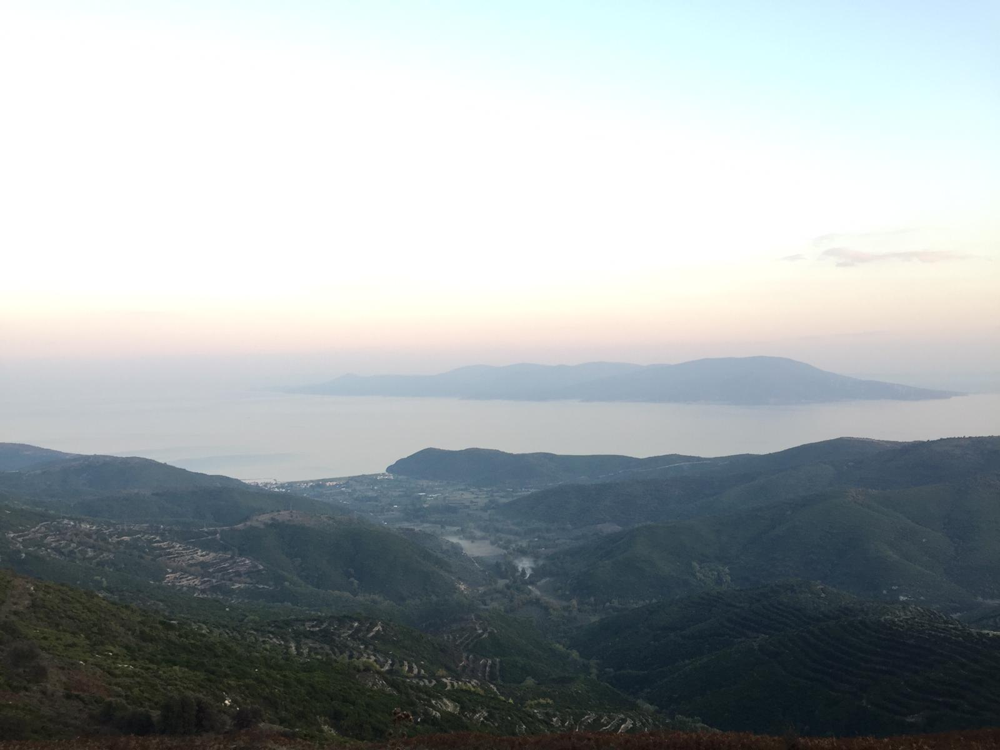
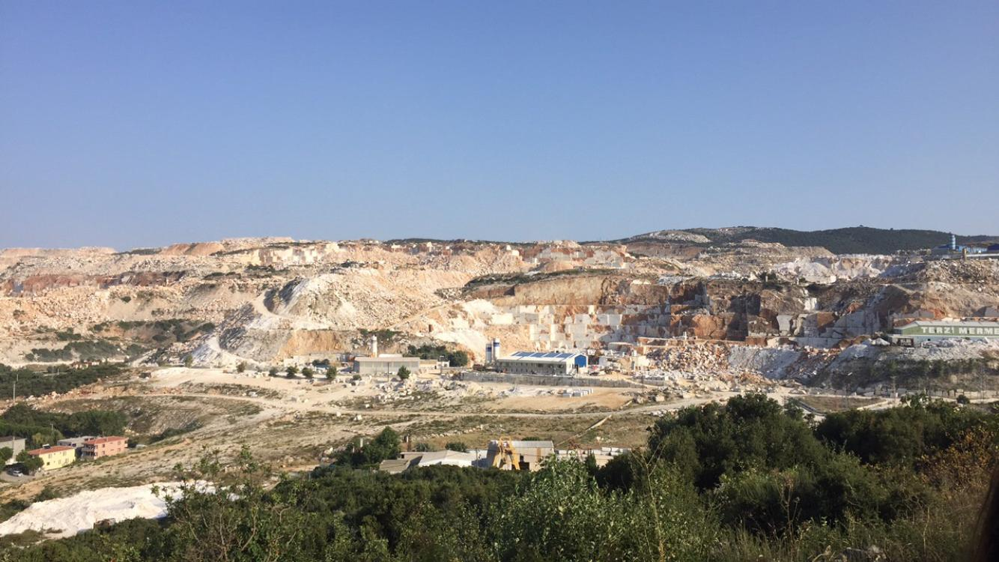

THINGS TO DO
I recommend you to taste the sage and verjuice in the tea gardens. The verjuice of the island is famous. It is made from underripe grape.
When the sea is rough , you can go to the Monastery Bay which is 15 minutes walk to the village and enjoy the sea. The water is quite clean and you can extract mussels under the rocks by snorkelling. You can have a picnick under the olive trees. Don't forget to pass to the other bays especially to the white bay. ( I recommend you to go with solid slippers. Because the monastery is rocky.So many slippers have given their lives to this cause. 😊 )
-

Monastery Bay
If you see a group of young people playing guitar on the beach in the evening , you can join them without hesitation. You can light a fire while listening to the waves rolling onto the beach. Under the starry sky , this atmosphere will leave a deep mark on you.
You can go for hiking when the weather is overcast to swim. You can visit the waterfall at the end of the fields. It dries due to the weather conditions in summer. However, the shapes of rocks are worth-seeing.
As the village is poor in terms of entertainment, it is possible to go to Marmara Center at night. You can eat famous island ice cream with the bagel. You will regret if you do not eat the hot bagel which comes out of the oven at 10 pm. There is also a disco in the center : Prokonnisos disco.
Going to the big-rock is on the list of things to do for lovers of hiking. Even how hard it is to wear your sneakers and climb the mountain for 1.30 hours , the scenery you'll see is worth it.
-

View from the Big Rock
You can visit the other villages of the island. Every part of the island is worth seeing.
You can stop by the Çınarlı village to see plane trees planted in 1001. A poem which is written for these century-old plane trees is on a marble in the village. Behind the beach there are very nice eating places.
The marble statues (made by university students) in many streets of the village where the marble quaries are located, is a reason to go Saraylar. Saraylar's beach is very well maintained and the sea is too shallow. Your children can enjoy in the newly built Abroz Masal Park behind the beach.
- 
Saraylar Village - marble quary

Çınarlı Village